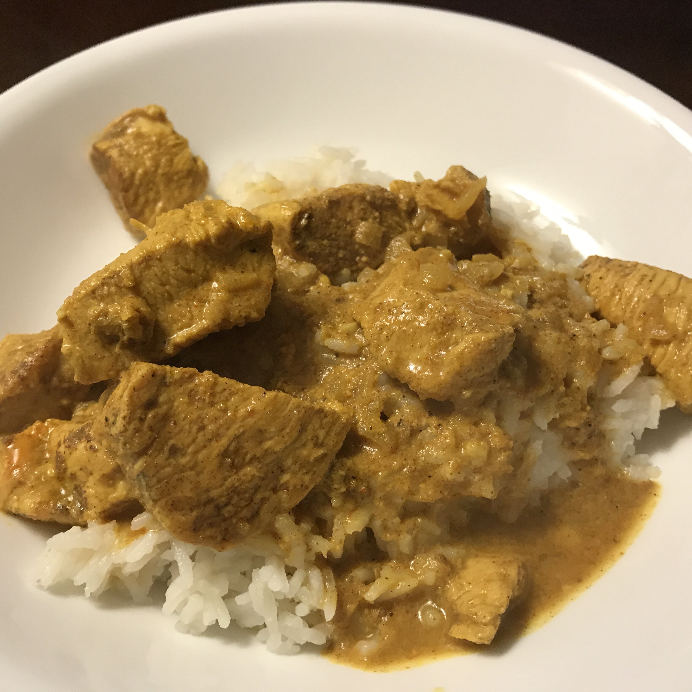

How to make a homemade Curry

How to make an authentic and delicious Indian Curry at home?
Description
This is a Curry recipe taken from Allrecipes to be used as a sample in the Odin Project.
Recipe
- 3 tablespoons olive oil
- 1 small onion, chopped
- 1 small onion, chopped
- 3 tablespoons curry powder
- 1 teaspoon ground cinnamon
- 1 teaspoon paprika
- 1 bay leaf
- ½ teaspoon grated fresh ginger root
- ½ teaspoon white sugar
- salt to taste
- 2 skinless, boneless chicken breast halves - cut into bite-size pieces
- 1 tablespoon tomato paste
- 1 cup plain yogurt
- ¾ cup coconut milk
- ½ lemon, juiced
- ½ teaspoon cayenne pepper
Directions
- Step 1
Heat olive oil in a skillet over medium heat. Saute onion until lightly browned. Stir in garlic, curry powder, cinnamon, paprika, bay leaf, ginger, sugar and salt. Continue stirring for 2 minutes. Add chicken pieces, tomato paste, yogurt, and coconut milk. Bring to a boil, reduce heat, and simmer for 20 to 25 minutes.
- Step 2
Remove bay leaf, and stir in lemon juice and cayenne pepper. Simmer 5 more minutes.
Nutrition Facts
Per Serving: 313 calories; protein 19.1g; carbohydrates 14g; fat 21.7g; cholesterol 37.9mg; sodium 268.3mg.
Back to Recipes.